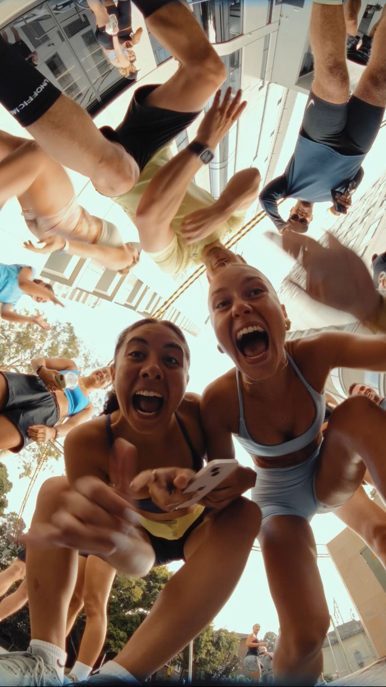
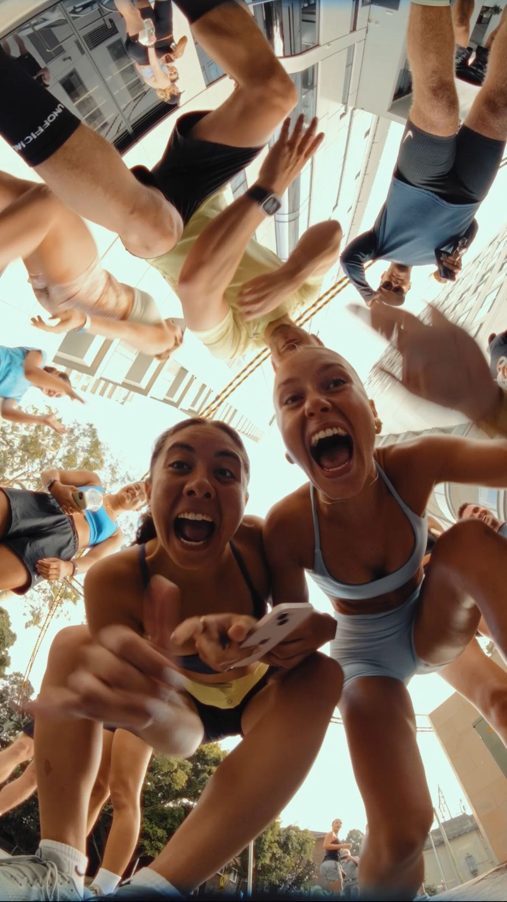

Join a Run Club Today—Because Running is Better Together.
Discover the benefits of joining a run club for your mind, body, and community. Whether you’re lacing up for the first time or you’re a seasoned runner, our website offers tips, training guides, and motivation to support every step of your running journey.
Why Join a Run Club?
- It helps you stay consistent by giving you scheduled runs to look forward to each week.
- It allows you to improve your performance by learning from more experienced runners and sharing training insights.
- Running with a group keeps you motivated because you’re surrounded by people who encourage you to keep going.
- You get to explore new and safe running routes that you may not have discovered on your own.
- Many run clubs offer coaching, workshops, or training plans that help you progress more effectively.
 

Learn more about joining a run club by clicking "About" at the top.